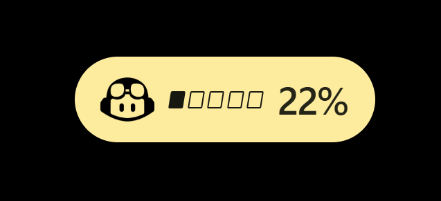

Credits at a glance
See GitHub Copilot AI-credit totals and progress without opening another page.
Keep GitHub Copilot AI credits and Claude Code usage within reach. A floating pill gives you the quick read; the system tray keeps the controls close.
Windows 11 · Portable ZIP · WebView2 Runtime required

GCT stays lightweight: glance at the pill, open Details when you need more, or tuck it away in the tray.
See GitHub Copilot AI-credit totals and progress without opening another page.
Get an approximate euro value for Copilot AI credits using a daily USD/EUR reference rate.
Check Claude Code usage from the login already configured on your machine.
Move, resize, pin, hide, and restore the floating pill with simple controls.
The euro figure uses GitHub's published value of $0.01 per AI credit and a daily USD/EUR reference rate. It is an estimate and may differ from actual billing or exchange rates.
No installer. Keep the app files together, then choose the usage source you want to see.
Get the Windows x64 archive from the latest release.
Keep gct.exe and WebView2Loader.dll in the same folder.
Run the app, connect GitHub Copilot, or select Claude Code usage from the tray.
Copilot tokens are stored in local WebView storage and are not encrypted by GCT itself. Claude usage uses the credentials maintained by Claude Code. Review the privacy notes before using the app on a shared device.